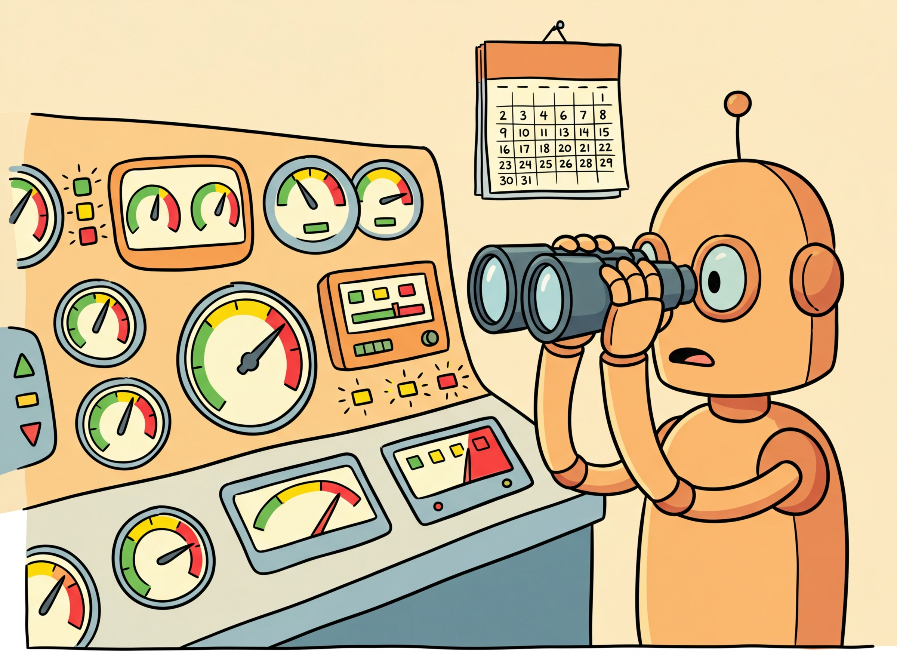

"Your model did not break. It just quietly became a different model when the provider updated their weights last Tuesday."
Eval AI Agent

Prerequisites
This section builds on all prior evaluation material from Section 29.1 through Section 29.5. Understanding fine-tuning from Section 14.1 and alignment from Section 17.1 helps with understanding evaluation of model adaptation quality.
LLM applications degrade silently. Unlike traditional software that crashes loudly when something breaks, LLM systems can quietly produce worse outputs without any errors or exceptions. Provider model updates change behavior overnight, embedding models get swapped, user query distributions shift, and prompts accumulate ad-hoc patches that interact in unexpected ways. Building on the observability infrastructure from Section 29.5, this section covers the types of drift unique to LLM systems and how to detect them before users notice the degradation.
1. Types of Drift in LLM Systems Intermediate
Drift in LLM applications occurs when the behavior of any component changes over time without intentional modification. Unlike classical ML systems where data drift and concept drift are the primary concerns, LLM systems face several additional drift categories that are unique to the LLM technology stack. Figure 29.6.1 categorizes the three types of drift in LLM systems.
OpenAI's silent update to GPT-4 in March 2024 caused widespread production failures across companies who had calibrated their prompts to the previous version's quirks. The AI community now treats "same model name, different weights" as a known hazard, much like expired milk with a future date on the carton.
2. Prompt Drift Detection Intermediate
Prompt drift occurs when the system prompt or prompt templates gradually change over time through incremental edits, accumulating special-case instructions, or growing context. Each individual change may seem harmless, but the cumulative effect can significantly alter model behavior. Without version control and monitoring, these changes are invisible. Code Fragment 29.6.1 below puts this into practice.
# Define PromptDriftMonitor; implement __init__, register_template, check_template
# Key operations: prompt construction
import hashlib
import json
from datetime import datetime, timezone
from difflib import unified_diff
class PromptDriftMonitor:
"""Monitor prompt templates for unauthorized or untracked changes."""
def __init__(self):
self.known_hashes: dict[str, str] = {} # template_name -> hash
self.change_log: list[dict] = []
def register_template(self, name: str, template: str):
"""Register a prompt template and its hash."""
h = hashlib.sha256(template.encode()).hexdigest()[:16]
self.known_hashes[name] = h
return h
def check_template(self, name: str, current_template: str) -> dict:
"""Check if a template has drifted from its registered version."""
current_hash = hashlib.sha256(current_template.encode()).hexdigest()[:16]
registered_hash = self.known_hashes.get(name)
if registered_hash is None:
return {"status": "unregistered", "name": name}
drifted = current_hash != registered_hash
result = {
"name": name,
"drifted": drifted,
"registered_hash": registered_hash,
"current_hash": current_hash,
"checked_at": datetime.now(timezone.utc).isoformat(),
}
if drifted:
self.change_log.append(result)
return result
def compute_template_metrics(self, template: str) -> dict:
"""Compute structural metrics for a prompt template."""
return {
"char_count": len(template),
"word_count": len(template.split()),
"line_count": template.count("\n") + 1,
"variable_count": template.count("{"),
"instruction_density": round(
sum(1 for w in template.lower().split()
if w in {"must", "always", "never", "should", "ensure"})
/ max(len(template.split()), 1), 4
),
}API providers (OpenAI, Anthropic, Google) regularly update their models, sometimes changing behavior significantly while keeping the same model name. A prompt that worked perfectly with gpt-4o-2024-05-13 may produce different results with gpt-4o-2024-08-06. Always pin model versions in production, monitor the system_fingerprint field in responses, and run your evaluation suite whenever a new version is released before adopting it.
The core intuition behind drift monitoring is that LLM systems exist in a constantly shifting environment where the model, the data, and the users all change independently. In classical ML, drift typically means the input distribution changed. In LLM systems, the model itself can change (provider updates), the knowledge base can change (new documents added to the RAG pipeline), and the prompts can change (incremental edits by teammates). Each type of drift has different symptoms and requires different monitoring strategies, which is why the unified dashboard approach from Section 29.5 is so valuable.
Silent model updates are the most dangerous form of drift. When your code changes, you can audit the diff. When your data changes, you can check the logs. But when your LLM provider silently updates the model weights behind the same API endpoint, nothing in your system raises an alarm. The behavior shifts, your carefully tuned prompts produce subtly different outputs, and the first signal you get is a user complaint. This is why version pinning and continuous evaluation (not just deployment-time testing) are essential for production LLM systems.
3. Embedding Drift in RAG Systems Intermediate
Embedding drift is particularly insidious in RAG systems (Chapter 20) because it can happen without any code changes. The most common cause is updating the embedding model (Chapter 19) (or the provider silently updating it), which changes the vector space. Documents embedded with the old model and queries embedded with the new model will have mismatched representations, degrading retrieval quality. Code Fragment 29.6.2 below puts this into practice.
# Define EmbeddingDriftDetector; implement __init__, _compute_embeddings, _pairwise_similarities
# Key operations: embedding lookup
import numpy as np
from typing import Callable
class EmbeddingDriftDetector:
"""Detect drift in embedding model behavior using reference queries."""
def __init__(self, embed_fn: Callable, reference_queries: list[str]):
self.embed_fn = embed_fn
self.reference_queries = reference_queries
# Store baseline embeddings
self.baseline_embeddings = self._compute_embeddings(reference_queries)
self.baseline_pairwise = self._pairwise_similarities(self.baseline_embeddings)
def _compute_embeddings(self, texts: list[str]) -> np.ndarray:
return np.array([self.embed_fn(t) for t in texts])
def _pairwise_similarities(self, embeddings: np.ndarray) -> np.ndarray:
# Cosine similarity matrix
norms = np.linalg.norm(embeddings, axis=1, keepdims=True)
normalized = embeddings / norms
return normalized @ normalized.T
def check_drift(self, threshold: float = 0.05) -> dict:
"""Re-embed reference queries and compare to baseline.
Drift is detected when the pairwise similarity structure changes
beyond the threshold, indicating the embedding model has changed.
"""
current_embeddings = self._compute_embeddings(self.reference_queries)
current_pairwise = self._pairwise_similarities(current_embeddings)
# Compare pairwise similarity matrices
diff = np.abs(self.baseline_pairwise - current_pairwise)
mean_diff = float(np.mean(diff))
max_diff = float(np.max(diff))
# Also check direct cosine similarity of same-query embeddings
direct_sims = []
for b, c in zip(self.baseline_embeddings, current_embeddings):
sim = np.dot(b, c) / (np.linalg.norm(b) * np.linalg.norm(c))
direct_sims.append(float(sim))
return {
"drift_detected": mean_diff > threshold,
"mean_pairwise_diff": round(mean_diff, 6),
"max_pairwise_diff": round(max_diff, 6),
"mean_direct_similarity": round(np.mean(direct_sims), 4),
"min_direct_similarity": round(min(direct_sims), 4),
"recommendation": (
"Re-index all documents with new embedding model"
if mean_diff > threshold
else "No action needed"
),
}4. Output Quality Monitoring Intermediate
Output quality monitoring samples production responses and evaluates them against quality criteria, complementing the production engineering practices from Chapter 31. Because you cannot evaluate every response in real time (LLM-based evaluation is too slow and expensive), the typical approach is to sample a fraction of requests, evaluate them asynchronously, and track quality metrics over time on a dashboard. Figure 29.6.2 shows a quality monitoring timeline with a silent degradation event. Code Fragment 29.6.3 below puts this into practice.
# Define QualityWindow; implement add_score, check_degradation
# Key operations: forward pass computation, RAG pipeline, evaluation logic
import random
import time
from collections import deque
from dataclasses import dataclass, field
from typing import Optional
@dataclass
class QualityWindow:
"""Sliding window for tracking quality metrics over time."""
window_size: int = 100
scores: deque = field(default_factory=lambda: deque(maxlen=100))
alert_threshold: float = 0.7
degradation_threshold: float = 0.05 # alert if mean drops by this much
baseline_mean: Optional[float] = None
def add_score(self, score: float):
self.scores.append(score)
if self.baseline_mean is None and len(self.scores) >= self.window_size:
self.baseline_mean = sum(self.scores) / len(self.scores)
def check_degradation(self) -> dict:
if len(self.scores) < 10:
return {"status": "insufficient_data"}
current_mean = sum(self.scores) / len(self.scores)
recent_mean = sum(list(self.scores)[-20:]) / min(20, len(self.scores))
result = {
"current_mean": round(current_mean, 4),
"recent_mean": round(recent_mean, 4),
"baseline_mean": round(self.baseline_mean, 4) if self.baseline_mean else None,
"below_threshold": recent_mean < self.alert_threshold,
"samples": len(self.scores),
}
if self.baseline_mean:
drop = self.baseline_mean - recent_mean
result["drop_from_baseline"] = round(drop, 4)
result["degradation_alert"] = drop > self.degradation_threshold
return result
# Usage: add scores from sampled production evaluations
quality_monitor = QualityWindow(window_size=200, alert_threshold=0.75)
# Simulate scored production responses
for score in [0.85, 0.90, 0.78, 0.82, 0.91, 0.73, 0.88, 0.79, 0.84, 0.86]:
quality_monitor.add_score(score)
print(quality_monitor.check_degradation())
# Define InterventionAction, DriftReport; implement recommend_action
# Key operations: training loop, embedding lookup, results display
from dataclasses import dataclass
from enum import Enum
class InterventionAction(Enum):
NONE = "no_action"
INVESTIGATE = "investigate"
ROLLBACK_PROMPT = "rollback_prompt"
PIN_MODEL_VERSION = "pin_model_version"
REINDEX_EMBEDDINGS = "reindex_embeddings"
RETRAIN_ADAPTER = "retrain_adapter"
@dataclass
class DriftReport:
"""Aggregated drift report with intervention recommendations."""
prompt_drifted: bool = False
provider_changed: bool = False
embedding_drifted: bool = False
quality_degraded: bool = False
quality_drop: float = 0.0
def recommend_action(self) -> InterventionAction:
"""Determine the appropriate intervention based on drift signals."""
if self.embedding_drifted:
return InterventionAction.REINDEX_EMBEDDINGS
if self.prompt_drifted and self.quality_degraded:
return InterventionAction.ROLLBACK_PROMPT
if self.provider_changed and self.quality_degraded:
return InterventionAction.PIN_MODEL_VERSION
if self.quality_degraded and self.quality_drop > 0.10:
return InterventionAction.RETRAIN_ADAPTER
if self.quality_degraded:
return InterventionAction.INVESTIGATE
return InterventionAction.NONE
# Example: generate and act on a drift report
report = DriftReport(
prompt_drifted=False,
provider_changed=True,
quality_degraded=True,
quality_drop=0.08,
)
action = report.recommend_action()
print(f"Recommended action: {action.value}")Types of Drift and Their Detection Strategies
| Drift Type | Root Cause | Detection Method | Response |
|---|---|---|---|
| Prompt drift | Accumulating template edits | Hash comparison, version control | Revert to last known good version |
| Provider version drift | Silent model updates by provider | system_fingerprint monitoring, eval suite | Pin version; run eval before adopting new version |
| Embedding drift | Embedding model change | Pairwise similarity stability on reference set | Re-index entire document collection |
| Query distribution drift | User behavior changes | Topic clustering, query length distribution | Update few-shot examples, expand knowledge base |
| Output quality drift | Any of the above | Sampled eval scores, user feedback trends | Investigate root cause, then apply targeted fix |
5. Retraining and Intervention Triggers Intermediate
The best drift detection strategy is a continuous evaluation pipeline that runs your evaluation suite on a sample of production traffic every day. Compare today's scores against the baseline established when the system was last validated. When you detect degradation, correlate it with known changes (prompt updates, provider version changes, data updates) to identify the root cause quickly. Automated intervention triggers should start with conservative actions (investigate, alert) and only escalate to disruptive actions (rollback, reindex) when the evidence is strong.
📝 Knowledge Check
Show Answer
Show Answer
Show Answer
Show Answer
Show Answer
Who: ML operations team at a healthcare information company running a symptom-checking chatbot
Situation: The chatbot used an OpenAI model endpoint without a pinned version. One Monday morning, response quality metrics dropped, but error rates remained at zero and latency was normal.
Problem: The provider had silently updated the model version over the weekend. The chatbot continued to function, but its medical triage accuracy degraded from 94% to 81% on their internal evaluation set. Without proactive monitoring, the team would not have noticed for days.
Dilemma: Pinning to an older model version preserved accuracy but would eventually reach end-of-life. Always using the latest version meant accepting unpredictable quality changes. Neither approach alone was sufficient.
Decision: The team implemented a three-layer drift detection system: model version fingerprinting, continuous evaluation sampling, and embedding stability monitoring.
How: They pinned the model to a dated version (e.g., gpt-4o-2024-08-06) and logged the system fingerprint from each API response. A background job evaluated 50 sampled production queries daily against their golden test set. When a new model version became available, they ran their full evaluation suite before switching. Embedding drift was tracked by computing pairwise cosine similarity on a fixed reference set weekly.
Result: The system now detected model changes within hours instead of days. When the provider released a new version, the team's evaluation suite ran automatically, and the switch was made only after confirming accuracy met their 92% threshold. They never again experienced an undetected quality degradation.
Lesson: Pin model versions, log system fingerprints, and run continuous evaluation against golden test sets; silent degradation is the most dangerous failure mode for LLM applications because it produces no errors to alert on.
Key Takeaways
- LLM applications degrade silently. Unlike traditional software that crashes visibly, LLM systems produce gradually worse outputs without errors. Proactive monitoring is the only way to detect this degradation.
- Monitor three drift dimensions. Track prompt drift (version control and hash monitoring), provider drift (model version pinning and fingerprint tracking), and embedding drift (pairwise similarity stability checks).
- Sample and evaluate production traffic continuously. Use asynchronous evaluation on a representative sample of production requests to track quality metrics over time without adding latency or excessive cost.
- Pin model versions in production. Never use unversioned model endpoints (such as "gpt-4o" without a date suffix). Always pin to a specific version and validate new versions with your evaluation suite before adoption.
- Automate intervention triggers conservatively. Start with investigation and alerting. Only escalate to automatic rollback or reindexing when you have strong evidence and well-tested automation.
Open Questions in Drift Detection (2024-2026):
- Semantic drift detection: Beyond embedding distance, how do you detect subtle changes in model behavior like shifts in reasoning style, declining nuance, or increased refusal rates? Behavioral fingerprinting approaches that characterize model behavior across a diverse probe set are emerging.
- Causal drift attribution: When multiple components change simultaneously (prompt, model, data), attributing degradation to a specific cause requires causal inference techniques adapted from observational studies.
- Predictive drift monitoring: Can we predict quality degradation before it affects users by monitoring leading indicators like input distribution shift or prompt template divergence?
Explore Further: Build a drift detection pipeline that tracks embedding stability on a fixed reference set, then simulate a provider model update to see how quickly your pipeline detects the change.
Exercises
Describe three types of drift unique to LLM systems (prompt drift, model drift, data drift). For each, give a real-world scenario that would cause it and one detection method.
Answer Sketch
Prompt drift: gradual accumulation of ad-hoc changes to the system prompt by different team members. Detected by version-controlling prompts and comparing evaluation scores across versions. Model drift: the provider silently updates model weights. Detected by running a canary test suite regularly and alerting on score changes. Data drift: user query distribution shifts (e.g., seasonal topics, new product launch). Detected by monitoring embedding distributions of incoming queries and alerting on distribution shifts.
Design a canary test suite of 20 carefully chosen prompts that would detect a silent model update. Describe the criteria for selecting these prompts and the scoring methodology you would use to detect a change.
Answer Sketch
Select prompts that cover: (1) factual questions with known answers, (2) formatting instructions (JSON, bullet points), (3) reasoning tasks with deterministic solutions, (4) edge cases the model previously handled well, (5) safety-boundary prompts. Run the suite daily with temperature=0. For each prompt, compute an embedding of the response and track cosine similarity to the baseline response. Alert when the average similarity drops below a threshold or when any individual response changes category (e.g., from correct to incorrect).
You monitor the embedding distribution of user queries over time. In week 3, the average pairwise cosine distance between the current week's queries and the baseline week increases by 15%. What could cause this? What actions should you take?
Answer Sketch
Possible causes: (1) a marketing campaign driving new types of users, (2) a product launch generating queries about unfamiliar topics, (3) seasonal shift in user interests, (4) a bot or adversarial actor generating unusual queries. Actions: (1) sample and inspect the new queries to understand the shift, (2) check if the system's response quality has degraded on the new query types, (3) consider updating the knowledge base or fine-tuning to cover the new distribution, (4) update the baseline if the shift represents a permanent change.
Your canary tests detect that GPT-4o's behavior changed after a provider update. Outline a response plan including immediate actions, investigation steps, and long-term mitigations.
Answer Sketch
Immediate: run the full evaluation suite to quantify the impact. If quality drops below the SLA threshold, fall back to a pinned model version or alternative provider. Investigation: compare canary responses before and after, identify which categories degraded. Contact the provider's support. Long-term: always pin model versions (e.g., "gpt-4o-2024-08-06"), maintain a secondary provider as failover, include model version in every trace for audit, and add automated alerting on canary score regressions.
Design the metrics and layout for an LLM monitoring dashboard. Include at least 6 metrics across three categories (quality, performance, cost) and explain the alerting thresholds for each.
Answer Sketch
Quality: (1) canary test pass rate (alert below 90%), (2) user satisfaction score (alert on 10% drop). Performance: (3) p50 and p99 latency (alert on 2x increase), (4) error rate (alert above 1%). Cost: (5) daily token spend (alert on 50% increase), (6) cost per successful request (alert on 30% increase). Layout: quality metrics at top (most important), performance in middle, cost at bottom. Include trend lines showing 7-day rolling averages and anomaly detection highlights.
What Comes Next
In the next section, Section 29.7: LLM Experiment Reproducibility, we address experiment reproducibility, the practices that make LLM research and development results trustworthy and repeatable.